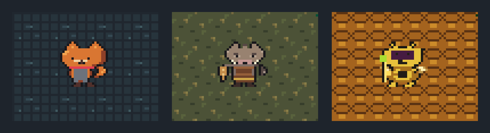
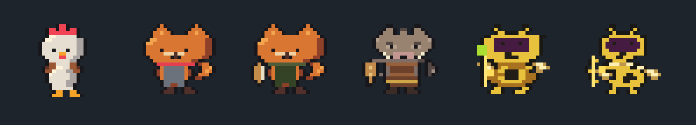

1편에서 닭장 구역 하나로 런 한 판이 돌게 만들었다. 이 글은 그다음 이야기다. 구역 2 숲길, 구역 3 말벌 둥지, 그리고 세 번째 플레이테스트에서 나온 고칠 거리를 다룬다.

8월 29일 — 구역을 데이터로
숲길을 넣기 전에 구조부터 바꿨다. 방의 바닥·벽 모양과 적 명단을 ZoneData 리소스로 빼고, Dungeon은 받은 구역대로 돌게 했다. 구역마다 Dungeon을 상속해 만들면 사본이 늘어난다. 그러면 "닭장은 되는데 숲길은 안 되는" 버그가 생길 수 있어서 이 방식을 피했다.
구역을 넘어도 이어지는 플레이어 상태(체력, 무기, 유물, 알)는 RunState로 분리했다. 보스방에는 포탈을 두고, 구역 전환 때는 소용돌이 화면 효과를 씌웠다. 숲길에는 멧돼지 산적을 넣었다. 등장하면서 한 번 돌진하는 잡병이다. 보스는 멧돼지 산적 두목이다. 돌진하다 벽에 박히면 기절하므로, 벽 쪽으로 유인하는 것이 공략이다.
숲길 방은 장애물이 촘촘하다. 32px 장애물을 32px 간격으로 놓았더니 가장자리가 맞닿아 160px이 넘는 벽이 됐다. 닭장의 고립된 기둥에 맞춘 우회 로직이 이 벽에서도 통하는지는 잰 적이 없었다. 그래서 영구 스위트를 만들었다. 숲길 방 셋, 스폰 지점 셋, 적 두 종의 18개 조합이 정해진 프레임 안에 플레이어와의 거리를 40% 이상 좁히는지 검사한다.
9월 1일 — 멧돼지 얼굴만 여섯 번
숲길 적의 전용 도트를 넣었는데 멧돼지가 계속 이상해 보였다. v6에서 20배로 키워 여우 병사 옆에 나란히 놓고 원인을 넷으로 좁혔다.
- 눈 자리에 어두운 가로 띠가 있어서 차양 달린 투구처럼 보였다
- 머리와 다른 색인 이마 갈기가 모자 챙으로 읽혔다
- 귀가 실루엣 밖으로 튀어나오지 않아 동물 머리로 안 보였다
- 엄니 넷이 코 양옆으로 퍼져 콧수염이 됐다
여우는 검은 눈 둘과 윤곽을 뚫는 삼각 귀만으로 얼굴이 된다. 멧돼지도 같은 원리로 눈을 넣고, 갈기를 2px로 줄이고, 귀를 세웠다.

9월 22일 — 3주 뒤, 하루에 32커밋
9월 1일 이후 3주 동안 커밋이 없었다. 그 사이 작업 머신이 Windows에서 Arch Linux로 바뀌었다. 18일에는 Linux·Windows·웹 세 플랫폼으로 내보낸 빌드를 만들었다(파일 기록 기준). 22일에 돌아와서 한 일은 크게 셋이다.
HUD를 글자에서 그림으로. 하트 아래에 "Eggs: 7 / Weapon: Sword" 같은 글자가 찍혀 있었는데, 사실 디버그 출력이었다. 무기 아이콘, 알·깃털 아이콘, 8×8 픽셀 숫자 시트로 바꿨다. 허브와 상점 매대도 그림으로 바꿨고, 물건 위에 한글 이름과 설명 말풍선을 띄웠다.
구역 3 말벌 둥지. 원래 설계에서 구역 3은 여우 마을이었다. 이날 그 자리에 설계에 없던 말벌 둥지를 넣고, 여우 마을은 구역 4로 미뤘다. 적은 모두 날아서 상자를 넘는다. 전사 말벌은 벽까지 돌진한 뒤 잠깐 멈추고, 궁수 말벌은 2초마다 독침을 3연발로 쏜다. 말벌 두목은 부채꼴·나선·고리 탄막을 쏘며 세 지점을 옮겨 다닌다. 구현을 마친 뒤에는 숲길 두목 → 포탈 → 말벌 둥지 → 두목 승리까지를 테스트가 실제로 걸어서 확인했다.
세 번째 플레이테스트 반영. 직접 해 보고 나온 결정을 그날 바로 코드에 넣었다.
- 보스 최대 체력 1.5배(여우 두목 48→72, 멧돼지 두목 60→90)
- 멧돼지 두목은 체력이 절반 아래로 내려가면 광폭화한다. 예고와 기절 없이 계속 돌진한다
- 전사 말벌은 벽에 박히면 2초 경직, 세 번째에는 5초 지친다. 이 "2-2-5" 리듬이 붙어서 때릴 틈이다
- 대시를 0.18초에서 0.26초로 늘렸다. 무적 시간이 대시 그림보다 먼저 끝나서, 아직 대시 중인 그림에서 맞았기 때문이다
- 상점 매대는 무기·무기·유물·포션 넷으로 고정했다
- ESC 일시정지 메뉴, 피격 흰색 점멸, 화면 아래쪽 대시 게이지(가득 차면 사라진다)
상자 벽 뒤에 숨으면 적이 벽면을 따라 좌우로 왔다 갔다 하는 버그도 이날 잡았다. 우회 방향으로 30px 갔다가 목표 쪽으로 돌면, 벽면 미끄러짐이 온 길을 되돌리는 쪽으로 몸을 밀었다. 그 미끄러짐이 "나아갔다"로 계산돼 우회가 끊겼다. 벽에 닿은 채 벽 안쪽으로 가려는 중이면 막힌 것으로 보도록 고쳤다.

테스트 러너가 90초에서 2초로
스위트가 76개로 늘자 전체 실행이 실시간 90초 제한을 넘었다. 대부분의 시간은 실제 시간이 흐르기를 기다리는 데 쓰이고 있었다. 러너를 --fixed-fps 60으로 돌리게 바꿨다. 프레임은 최대 속도로 돌고 물리와 타이머는 프레임당 1/60초씩 그대로 흐른다. 같은 76개 스위트(어서션 1930개)가 약 2초에 끝났다. 마지막 커밋 시점에는 82개 스위트, 어서션 2146개가 실패 없이 통과했다.
회고
8월 27일부터 9월 22일까지 커밋은 153개다. 그중 85개가 8월 28일 하루에 몰려 있다. 지금 되는 것은 허브 → 닭장 → 숲길 → 말벌 둥지까지의 한 판, 보스 셋, 무기 넷과 유물, 깃털로 사는 영구 업그레이드다. 설계에 있던 여우 마을(이제 구역 4), 여우 요새, 최종 보스, 플레이어블 닭 해금, 스토리 NPC는 아직 없다. 공개 배포나 외부 플레이어 반응은 없어서 정량 성과는 확인하지 못했다.
기술스택
- Godot 4.7.2 (GL Compatibility), GDScript
- 내보내기: Linux x86_64, Windows x86_64, Web(WebAssembly)
- 헤드리스 테스트 러너(
--fixed-fps 60), 렌더링 확인 도구tools/screenshot.gd, 버그 계측용 프로브 스크립트 - 개발 보조: Claude Code (gamemaker-agent 폴더 에이전트)
배운 점
- 구역 차이를 상속이 아니라 데이터(
ZoneData)로 두니, 구역 3을 하루에 붙일 수 있었다. - 그림이 이상할 때는 "이상하다"에서 멈추지 말고, 크게 키워 잘 읽히는 그림 옆에 놓고 비교하면 원인이 낱낱이 보인다.
- 플레이테스트에서 나온 말은 수치 하나, 테스트 하나로 바로 옮겨 두면 다음 판에서 확인하기 쉽다.
- 시간을 기다리는 테스트는 실시간이 아니라 고정 프레임으로 돌려야 스위트가 늘어도 버틴다.
연재 · 치킨나이트
- 치킨나이트 ① — 수탉 기사 로그라이크, 하루 만에 뼈대와 도트까지
- 치킨나이트 ② — 숲길과 말벌 둥지, 세 번째 플레이테스트, 그리고 회고